4. Manual del editor: crear guías y mantener la lista de recursos
Un editor crea guías, es su responsable y decide quién más las edita. También mantiene la lista de recursos bibliográficos A-Z, los autores y las editoriales. Hace además todo lo que hace un colaborador (capítulo 3).
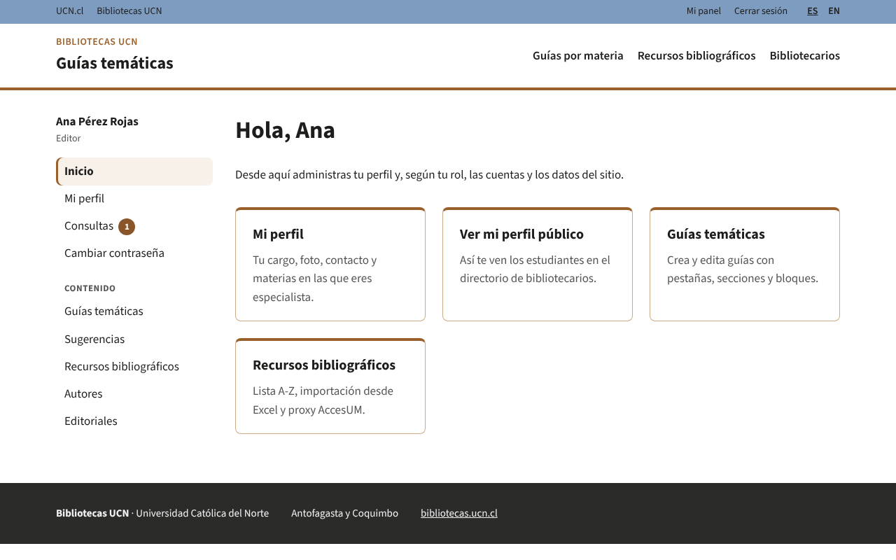
4.1 Crear una guía#
En Guías temáticas hay dos botones:
- Nueva guía (manual): crea una guía vacía con una pestaña «Inicio».
- Nueva guía con IA: arma una guía completa a partir de las materias (ver 4.5).
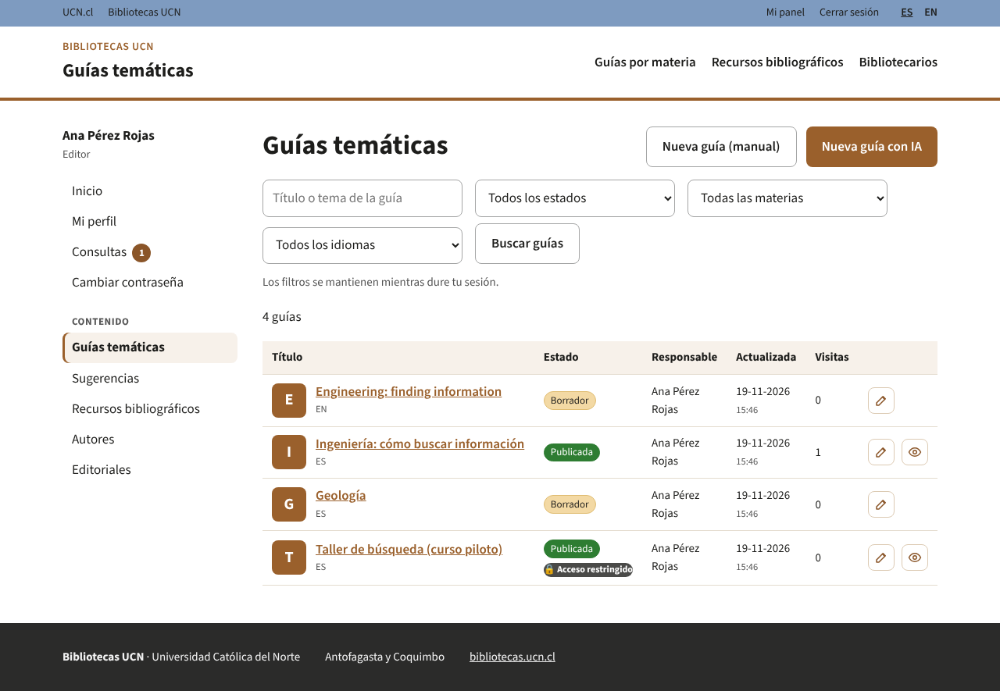
Datos de la guía#
Al crear la guía (y luego con Datos de la guía en el editor) se completa este formulario:
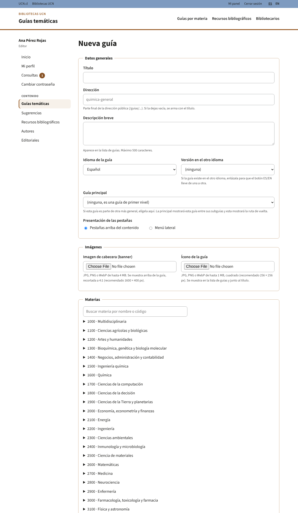
| Campo | Para qué sirve |
|---|---|
| Título | Nombre de la guía |
| Dirección | Parte final de la dirección pública (/es/guias/…). Si
la dejas vacía se arma con el título. Solo minúsculas sin tildes,
números y guiones |
| Descripción breve | Aparece en la lista de guías y en los buscadores (hasta 300 caracteres) |
| Idioma de la guía | Español o inglés |
| Versión en el otro idioma | Enlaza la misma guía en el otro idioma: el botón ES / EN lleva de una a otra |
| Guía principal | Si esta guía es parte de otra más general (por ejemplo, «Química orgánica» dentro de «Química») |
| Presentación de las pestañas | Pestañas arriba del contenido o menú lateral |
| Imagen de cabecera (banner) | JPG, PNG o WebP de hasta 4 MB, recortada a 4:1 (recomendado 1600 × 400 px) |
| Ícono de la guía | Cuadrado, hasta 1 MB (recomendado 256 × 256 px); se ve en la lista de guías |
| Materias | Las de la guía: definen dónde aparece en «Guías por materia», qué sugerencias recibe y las materias de los recursos que se agregan desde ella |
| Coeditores | Personas que pueden editar el contenido, pero no publicar ni cambiar estos datos |
| Visibilidad | Pública o Solo usuarios asignados |
| Usuarios asignados | Quiénes pueden ver la guía si es restringida |
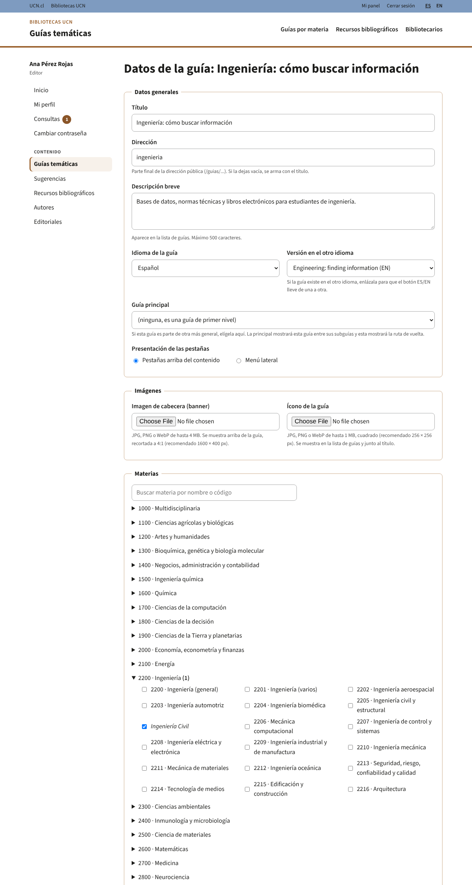
Ejemplo. Ana crea la guía «Química»: dirección
quimica, idioma español, materias «Química (general)» y
«Química orgánica», coeditora Carla (colaboradora del área) y
presentación «Menú lateral». Luego crea «Chemistry» en inglés y, en
Versión en el otro idioma, enlaza ambas.
Guías restringidas#
Con Visibilidad: Solo usuarios asignados, la guía no aparece en la lista pública ni en los buscadores. Al abrir su dirección se pide iniciar sesión, y solo la ven los usuarios asignados, el responsable, los coeditores y los administradores. Para alguien que no es del personal (por ejemplo, estudiantes de un curso piloto), el administrador le crea una cuenta con el rol Lector.
Guías principales y subguías#
Si eliges una Guía principal, esta guía pasa a ser una subguía: la principal muestra la lista de sus subguías en su portada, y la subguía muestra «Parte de…» y la ruta completa en las migas de pan.
4.2 Publicar, pasar a borrador y eliminar
Toda guía nace en Borrador: solo se ve en la vista previa del panel. Con Publicar (en la cabecera del editor) aparece en el sitio; Pasar a borrador la retira sin perder nada. Los cambios en una guía publicada se ven de inmediato.
Para eliminar una guía, ve a Datos de la guía y usa Eliminar la guía al final. Se borran sus pestañas, secciones y bloques; los recursos de la lista A-Z y los perfiles no se modifican. No se puede deshacer.
Solo el responsable (o un administrador) publica, cambia los datos o elimina la guía.
4.3 Lista de recursos bibliográficos A-Z
Recursos bibliográficos es la lista maestra de todo lo que se recomienda: bases de datos, revistas, libros, artículos, normas, repositorios, multimedia, herramientas y sitios web. Lo que se agrega aquí aparece en la lista pública A-Z y se puede usar en los bloques de las guías.
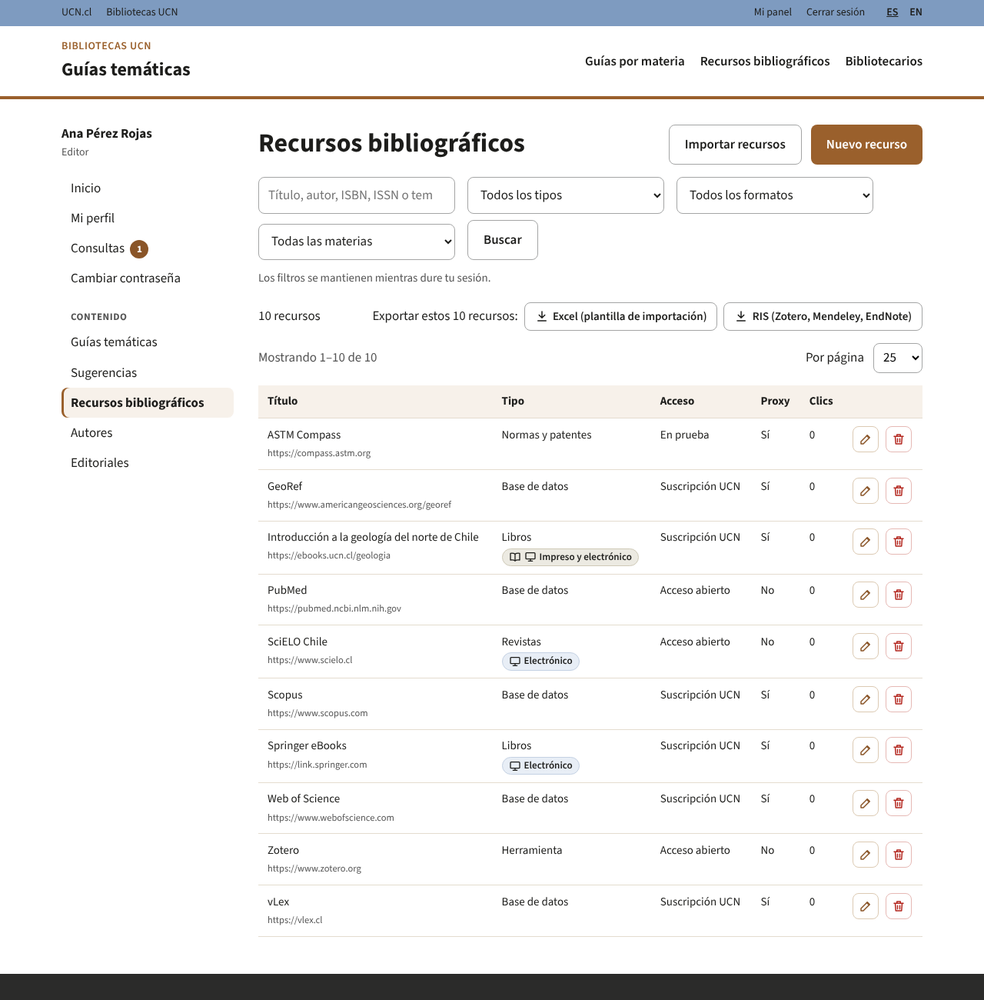
Filtros. Texto (título, autor, ISBN, ISSN o tema), tipo, formato y materia. Como en las guías, los filtros, la página y la cantidad por página se recuerdan mientras dure la sesión.
Crear o editar un recurso#
Nuevo recurso abre el formulario. Los datos bibliográficos cambian según el tipo elegido.
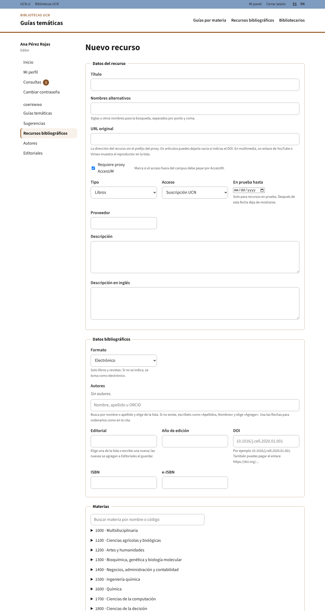
| Campo | Para qué sirve |
|---|---|
| Título y nombres alternativos | Los alternativos (siglas, nombres antiguos) también sirven para buscar |
| URL original | La dirección del recurso sin el proxy |
| Requiere proxy AccesUM | Marcado para los recursos suscritos: el enlace público pasa por el proxy y funciona fuera del campus |
| Tipo | Base de datos, Revistas, Artículo científico, Libros, Repositorio, Normas y patentes, Multimedia, Herramienta, Sitio web |
| Acceso | Suscripción UCN, Acceso abierto o En prueba |
| En prueba hasta | Para accesos de prueba: después de esa fecha el recurso deja de mostrarse |
| Proveedor | Plataforma o editor (EBSCO, Elsevier, ProQuest…) |
| Descripción y descripción en inglés | Texto que se ve en la lista A-Z y en los bloques |
| Datos bibliográficos | Según el tipo (ver tabla) |
| Materias | En qué materias aparece |
| Visible | Desmarcado, el recurso se oculta del público sin borrarlo |
| Tipo | Datos bibliográficos |
|---|---|
| Libros | Formato, autores, editorial, año de edición, ISBN, e-ISBN, DOI |
| Revistas | Formato, editorial, ISSN, e-ISSN, disponible desde |
| Artículo científico | Autores, fuente (revista), año, volumen, fascículo, páginas, DOI |
| Base de datos | Disponible desde |
| Normas y patentes | Código de la norma, organismo emisor, año |
| Multimedia | Autores, año (un enlace de YouTube o Vimeo muestra el reproductor) |
Los autores se buscan entre los existentes o se agregan escribiendo «Apellidos, Nombres», y se ordenan como en la cita. La editorial se elige de la lista o se escribe una nueva. ISBN, ISSN y DOI se validan al guardar.
Ejemplo. Para agregar Web of Science: tipo
Base de datos, URL
https://www.webofscience.com, Requiere
proxy marcado, acceso Suscripción UCN,
proveedor «Clarivate», materias «Multidisciplinaria». En el sitio, el
enlace saldrá como
https://itmsp.museknowledge.com/UCN?qurl=… y funcionará
desde la casa del estudiante.
Importar desde Excel, BibTeX o RIS
Importar recursos carga muchos recursos de una vez desde Excel (.xlsx, .xls), OpenDocument (.ods), CSV, BibTeX (.bib) o RIS (.ris), hasta 10 MB y 5.000 registros.
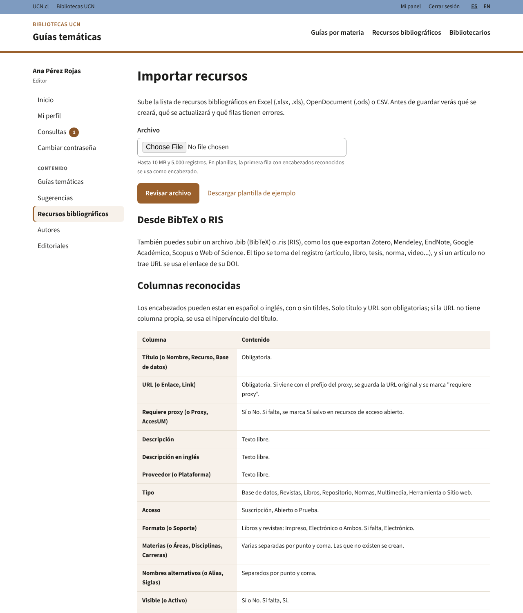
- Descarga la plantilla de ejemplo y complétala (o usa tu propia planilla: los encabezados se reconocen en español o inglés, con o sin tildes; solo título y URL son obligatorios).
- Súbela y presiona Revisar archivo.
- En la vista previa, cada fila indica si se creará, se actualizará (ya existe un recurso con la misma URL o título) o tiene errores. Puedes desmarcar filas, elegir la URL cuando hay varias, marcar el proxy y ajustar las materias.
- Presiona Importar para guardar.
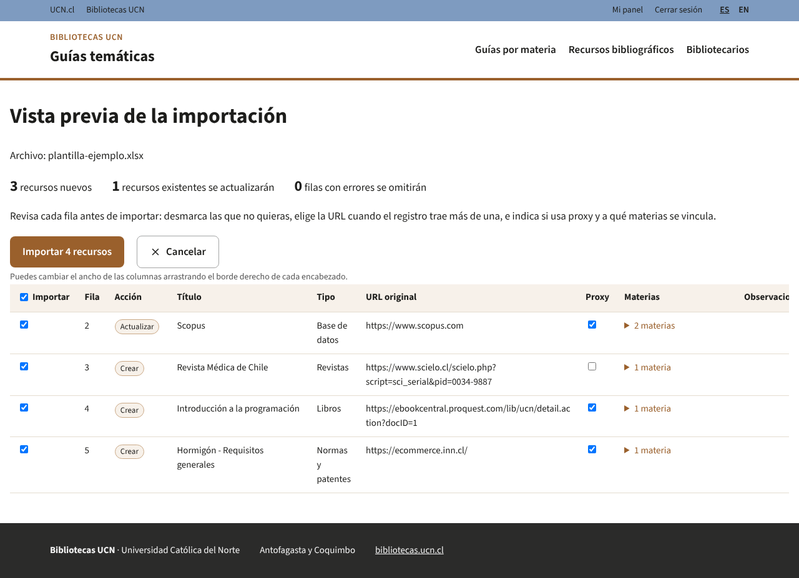
Detalles útiles:
- Si las URL vienen con el prefijo del proxy, la importación lo quita y marca «Requiere proxy».
- En la columna Materias, separa varias con punto y
coma (
Ingeniería civil; Geología). La importación no crea materias: los nombres que no coinciden se informan para que elijas la categoría. - Autores en formato «Apellidos, Nombres», separados por punto y coma.
- Los archivos BibTeX y RIS se exportan desde Zotero, Mendeley, EndNote, Google Académico, Scopus o Web of Science.
Exportar#
Sobre la tabla hay dos botones que exportan los recursos que cumplen los filtros actuales:
- Excel (plantilla de importación): mismas columnas que la plantilla. Sirve para respaldar, revisar o corregir datos en bloque y volver a importarlos (al reimportar se actualizan los mismos recursos).
- RIS (Zotero, Mendeley, EndNote): para gestores bibliográficos, con autores, año, editorial, ISBN/ISSN, DOI, enlace con proxy y materias como palabras clave.
Ejemplo. Para corregir los proveedores de todas las bases de datos: filtra por tipo Base de datos, exporta a Excel, corrige la columna Proveedor y vuelve a importar el archivo.
4.4 Autores y editoriales#
Autores y Editoriales son tablas propias que usan los recursos.
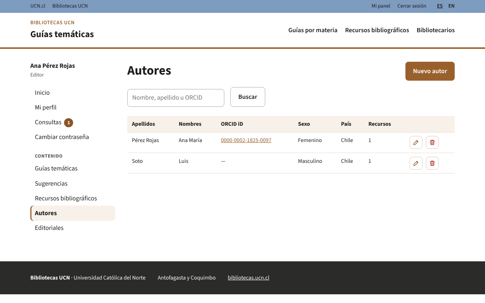
- Autor: nombres, apellidos, ORCID iD (se valida), sexo y país. Un autor institucional (por ejemplo «Organización Mundial de la Salud») lleva el nombre completo en apellidos.
- Editorial: nombre (no se repite) y país.
La columna Recursos indica cuántos recursos usan cada uno. Al importar, los autores y editoriales se buscan sin distinguir mayúsculas ni tildes y se crean solo si no existen.
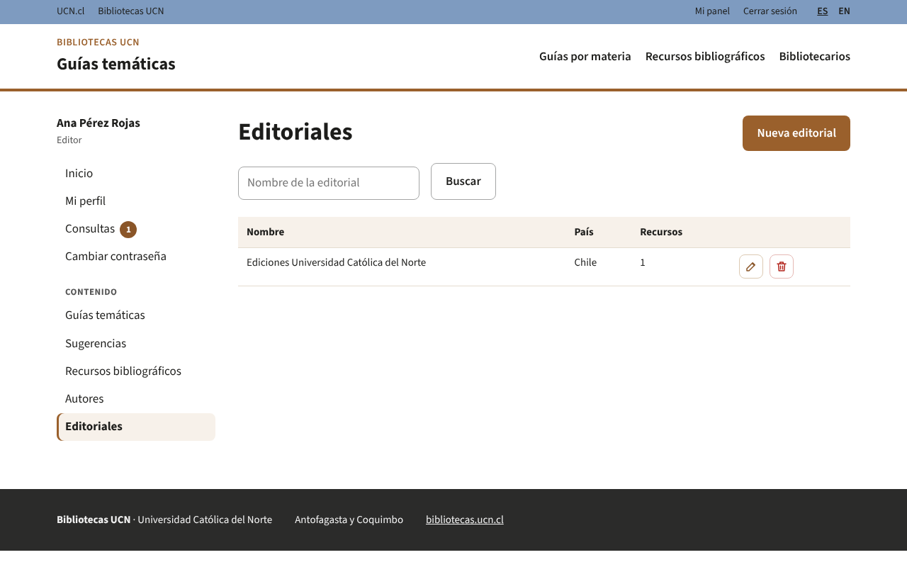
4.5 Nueva guía con IA#
El asistente arma una guía en borrador con seis pestañas a partir de las materias que elijas: Presentación, Bases de datos, Revistas, Sitios web, Citación y gestores, y Libros.
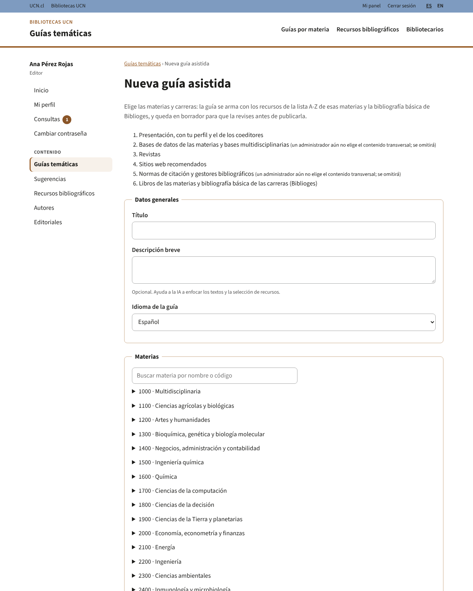
- Escribe el título, una descripción breve y el idioma.
- Elige al menos una materia: los recursos de la lista A-Z de esas materias llenan las pestañas.
- Opcional: coeditores y hasta 5 carreras de Biblioges, cuya bibliografía básica disponible (última edición) se agrega a la pestaña Libros y a la lista A-Z.
- Presiona Crear la guía. En unos segundos se abre el editor con la guía armada.
Con la inteligencia artificial (Gemini) configurada, se eligen los recursos más pertinentes, se escriben los textos de presentación y se proponen sitios web adicionales en un bloque «Sugeridos por IA (revisar)». Esos sitios no entran a la lista A-Z: revísalos y bórralos o muévelos antes de publicar. Sin IA, la guía se arma igual con todos los recursos de las materias en orden alfabético.
A Gemini solo se envían las materias, carreras y títulos y descripciones de recursos; nunca datos de personas.
La guía queda en borrador: revísala completa, ajusta los textos y publícala cuando esté lista.
4.6 Ejemplo completo: guía de Geología de principio a fin
- Nueva guía (manual): título «Geología», materias «Geología» y «Ciencias de la Tierra y planetarias (general)», coeditor Diego, presentación «Menú lateral». Guardar.
- En Recursos bibliográficos, verifica que GeoRef y Scopus tengan la materia Geología; si falta GeoRef, créalo.
- En el editor, renombra «Inicio» si quieres y agrega una sección con un bloque Texto de bienvenida y un bloque Perfil del bibliotecario.
- Pestaña «Bases de datos» con un bloque Recursos bibliográficos: filtra por materia Geología, marca todos y agrégalos en orden alfabético.
- Pestaña «Libros» con un bloque Libros cargado desde Biblioges.
- Pestaña «Cómo citar»: Pestaña de otra guía → Vincular la pestaña común de citación.
- Revisa con Vista previa y presiona Publicar.